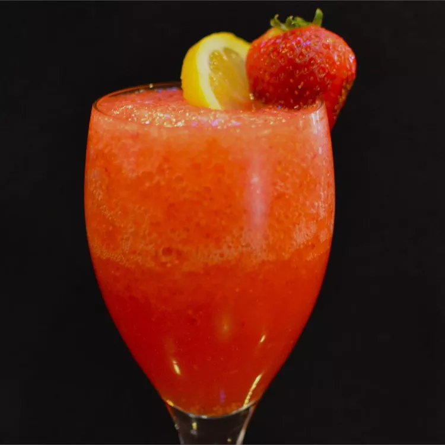

Strawberry Lemonade

Only 4 ingredients and a cinch to make.
A summer drink that is sure to refresh and delight.
INGREDIENTS
- ½ cup water
- ⅓ cup dry lemonade-flavored drink mix
- 3 cups ice cubes
- 1 cup strawberries
STEPS/PROCEDURES
- Stir water and lemonade mix together in a cup until the mix dissolves.
- Combine ice cubes and strawberries in a blender. Pour lemonade mixture into the blender.
Blend on high for 10 seconds. Stop blender and stir with a spoon.
Blend again until smooth, about 5 seconds more.